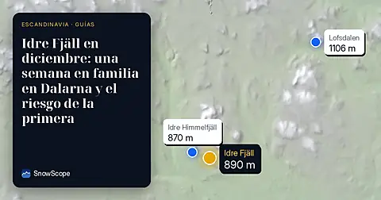
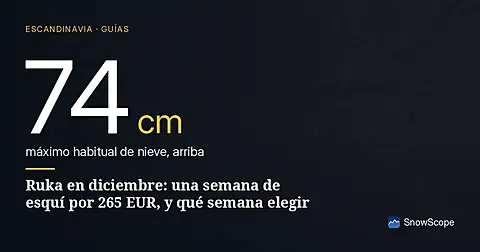
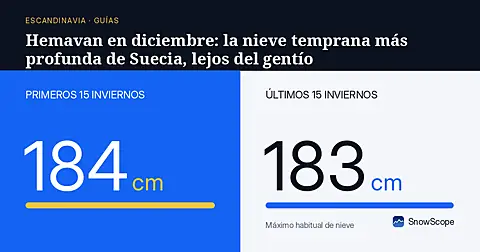
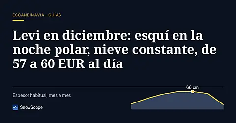
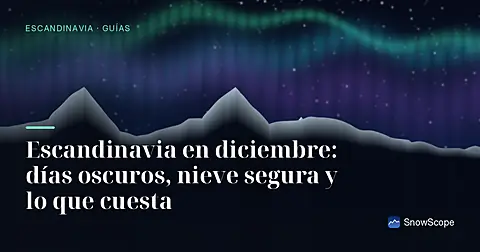

Partes de nieve · Escandinavia
Partes de nieve diarios para esquiadores: dónde está la nieve, qué llega y dónde esquiar, a partir del mapa de nieve de SnowScope y de las estaciones de medida. Cada cifra sale de los datos del día.
La nieve por país hoy
Los países más blancos hoy: Sweden (95 %), Finland (95 %) y Norway (94 %).
Más nieve nueva en la semana: Norway (44 cm), Sweden (19 cm) y Finland (10 cm).
La nieve hoy en las grandes estaciones
- Abisko · 137 cm
- Sulitjelma Fjellandsby · 124 cm
- Tromsø Alpinpark · 72 cm
- Hemsedal skisenter · 42 cm
- Orsa Grönklitt · 39 cm
- Myrkdalen · 36 cm
- Jølster Skisenter · 35 cm
- Volda skisenter · 32 cm
- Hornindal · 31 cm
- Järvsöbacken · 30 cm
- Surnadal · 26 cm
- Åre · 26 cm
- Sunndal alpinsenter · 25 cm
- Gräftåvallen · 24 cm
- Bydalsfjällen · 23 cm
- Lindvallen · 23 cm
- Rukatunturi · 23 cm
- Saariselka · 23 cm
- Tusten Skiheiser · 23 cm
- Kiririnteet · 22 cm
- Skarmoen Alpinpark Bodø · 22 cm
- Ski Saariselkä · 22 cm
- Ramundberget · 21 cm
- Storlien · 21 cm

Las probabilidades de nieve en Idre Fjäll en diciembre mejoran bruscamente después de mediados de mes. El 13 de noviembre, la profundidad típica a media montaña el 15 de diciembre es de 32 cm.

Sälen en diciembre: 28 cm un 15 de diciembre típico y 48 % de inviernos con 30 cm a mitad de mes, menos que en los 80; Trysil, al lado, va mejor.

El forfait de 6 días en Ruka cuesta EUR 265. Las probabilidades de nieve suben del 39% en principios de diciembre al 85% en la semana de Navidad. Planifica mediados de mes o más tarde.

La media montaña de Hemavan tiene 82 cm de nieve el 15 de diciembre típico. Todos los inviernos en 46 años tuvieron 30 cm o más a media altura en mediados de diciembre. Datos del 13 de noviembre de 2026.

La base de Oppdal tiene 60 cm de nieve el 15 de diciembre típico, con un 93% de inviernos manteniendo 30 cm o más a mediados de diciembre. Datos de 46 inviernos.

La media montaña de Geilo es esquiable en el 96 % de los diciembres. Profundidad típica el 15 de dic: 42 cm base, 57 cm media, 68 cm cima. Forfait diario desde NOK 590.

El 15 de diciembre, Hemsedal muestra 32 cm en base, 70 cm a media montaña y 106 cm en cima. La altitud lo es todo aquí.

La nieve de diciembre en Levi se ha consolidado con el tiempo. Últimos 15 inviernos: el 100 % de las semanas navideñas tuvieron 30 cm o más. Profundidad típica el 15 de diciembre: 38 cm. Datos del 13 de noviembre de 2026.

La nieve a media montaña alcanza 30 cm en el 83–100 % de los diciembres en Escandinavia. Precios fijos en Finlandia; precios dinámicos en Noruega y Suecia. Datos de 46 inviernos, 13 de noviembre de 2026.

Trysil en diciembre: 44 cm a media montaña un 15 de diciembre típico, 83 % de inviernos con 30 cm a mitad de mes; los precios son dinámicos, reserva pronto.

Reserva del 15-21 de diciembre en Åre para las mejores probabilidades de nieve antes de las multitudes navideñas. El 89 % de los inviernos tuvieron 30 cm a media montaña esa semana. Datos del 13 de noviembre de 2026.